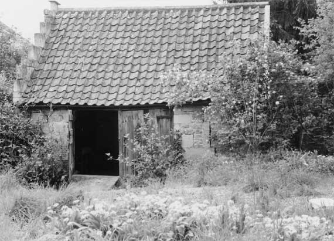

Type of building:
Industrial - former mill building (possible dye- house)
Listing:
Not listed
Plan and elevation:
Single unit, single pile and single storey
Summary of the probable main building
history:
Late 17th Century

South elevation
Exterior:
The south or front elevation is of coursed rubble with dressed stone quoins and
with a large entry presently protected by solid wood double doors. Even so there
is evidence that the original entry was wider and subsequently reduced in width
with a combination of recycled rubble and dressed stone. The wall of the west
gable elevation is relatively thick at about 60cms., has some buttered rubble
work and a slightly off-centred low opening or entry which is now blocked. This
former opening has a triangular shaped head constructed from large blocks of dressed
stone. The apex of the gable is in-filled with modern bricks. The roof is pitched
and covered with modern clay tiles although it is likely that the original roof
was louvred. The left verge of the roof has been given a serrated appearance with
recycled dressed stone blocks from a mid to late 19th Century adjacent demolished
building. This, again, is modern work, apparently an attempt to capture the effect
of a “garden folly”.
To the east, the building abuts the St. Catherine’s Brook. The east wall, again, is relatively thick, of coursed rubble construction, has another centrally placed triangular shaped opening constructed from large blocks of dressed stone and now blocked with an in-fill of 9” x 2 1/2” hand made bricks. The bricks are set back about 3cms into the opening at its head but curve inwards at its foot to be inset about 30cms. The purpose of this is not known. The present distance from the opening to the stream is about 1.90m. With the slope of the ground downwards west-east to the brook, the blocked opening has more of the height of a former door than its counterpart on the west wall although in the latter case it is likely that the apparent lower level of the door is due to a deliberate building up of the ground level subsequent to the original construction date, probably as a flood precaution. Indeed the 1840 Tithe Map indicates that the brook had been ponded back to the door. Flanking the blocked eastern opening there are two “windows” which, however, do not contain glass and do not appear to have been designed to contain glass. Their likely purpose is ventilation as much as light. Each window is constructed of slabs of dressed stone with a timber lintel. The north corner of the wall is rounded (no quoins). Again, the roof angle at the apex has been filled in with modern brickwork. The north lateral wall of the building marks the boundary of the property and was not available for inspection.
Approximately 3.50m south-east of the building there is an arched wagon bridge (3.20m. wide) crossing the St. Catherine’s Brook and giving access to the former mill some short distance down stream. The bridge is built of small well-dressed stone blocks with relatively wide joints. The parapets of the bridge are coped. The east, or far bank, entry to the bridge is guarded by a heavy solid wood door.
The building was also probably accessed from the main road to the west by a cobbled lane passing down alongside to the north of a former clothiers house although the actual course the lane took can no longer be precisely determined much beyond the house. The 1840 Tithe Map shows the lane ending on the west boundary of the ground in which the structure lies, as though it had been deliberately dug up from this point as the usage of the land changed.
Interior:
The blocked openings on the west and east gable ends appear with brick built relieving
arches over. The flooring consists of worn irregularly shaped stone slabs. In
view of the external ground level, particularly at the east gable end, it is likely
that the floor has been built up to its present level subsequent to the construction
of the building. There is a blocked entry in the north wall. The roof timbers
are of the collar-beam type with the collar scarf jointed into the heavy principal
rafters and further secured with iron nails. Purlins are cut back at their junction
with the principals. In their turn, the principals are diagonally jointed at the
apex the point of which has been cut off, presumably to support a former louvred
roof.
Date & development:
The building has been subject to extensive alteration but the thickness of the
gable walls and surviving buttered rubble walling indicates an original 17th Century
construction date. The fashioning of the roof timbers, pointing to an early 18th
Century date at latest, is not inconsistent with this conclusion. The sizing of
the bricks blocking the two openings suggests that this work was carried out in
about the mid 18th Century, certainly some time after the Act of 1725 but before
the Act of 1776 standardising brick sizes. The small sized dressed stone blocks
of which the bridge is constructed supports the finding of a 17th Century date
for the original building.
Ownership/occupation:
The building falls within the historic curtilage of a house, built in c.1670 by
the clothier, John Fisher, who in 1665 had acquired the mill some distance downstream
(Dobbie p. 76). The building, with its ready access to the mill via the wagon
bridge, was probably part of the mill complex. Its very close proximity to the
brook accessed by the east gable opening, indeed, the apparent previous ponding
back of the brook to the door (per the 1840 Tithe Map)), its high degree of ventilation
with “windows” or openings in every wall and its likely louvred roof
suggest that it functioned as a scouring/dye-house for the type of woollen textiles
(medleys) being produced in Batheaston at this time even though all evidence of
the positioning of the vats has been lost. The evidence suggests that by the early
18th Century the building ceased to be a dye-house and had become no more than
a mere garden structure as the Fishers’ became gentrified. The 1840 Tithe
Apportionment Schedule describes the ground upon which it stands as an orchard.
By this date the last of the Batheaston Fishers’, Mrs Jane Fisher, was in
ownership even though the mill complex itself some distance downstream had long
since passed into different hands - by about 1750 Thomas Drewett had ownership
of the mill and the nearby property BE 037 (Dobbie p. 145) and, apparently, had
earlier acquired his own adjacent stove and dye-house (Rogers p 167), possibly
as early as 1739 on lease from James Walters (see BE 039).
References:
- B. M. Willmott Dobbie An English Rural Community Bath University Press 1969
- Kenneth Rogers Wiltshire & Somerset Woollen Mills Pasold 1976
- Batheaston Tithe Map & Apportionment Schedule 1840 Somerset Record Office
Reference Pictures
| East elevation overlooking the brook | Bridge over St Catherine’s Brook | Inside of east wall showing the opening (blocked) and ventilation “windows” overlooking the brook |
| Inside of west wall | West elevation blocked opening |
Survey Drawings
| Ground Plan | Section | East Elevation |
| Location sketch of the structures associated with the old woollen textile mill. |